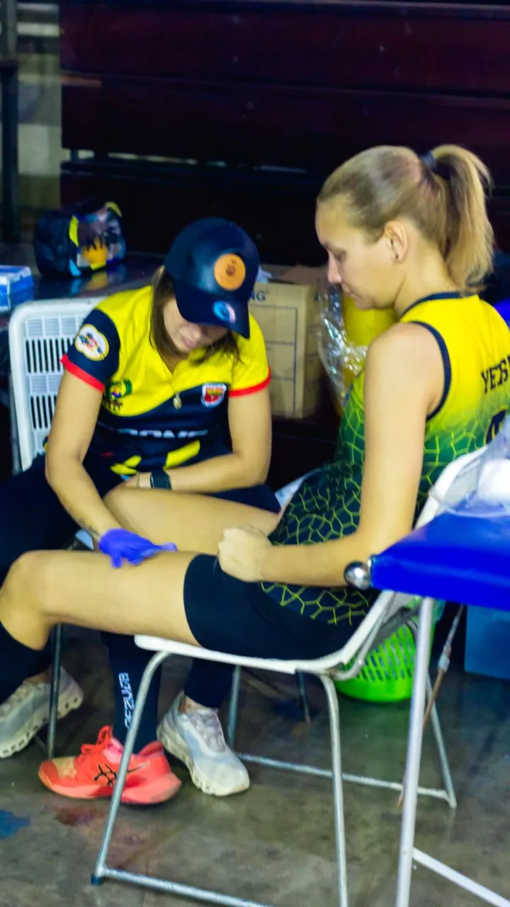
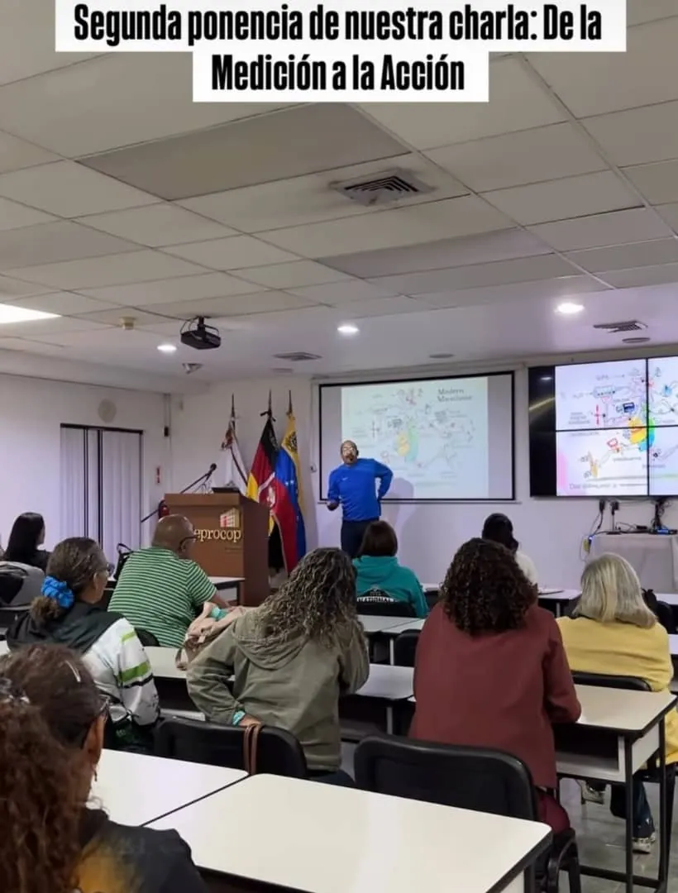
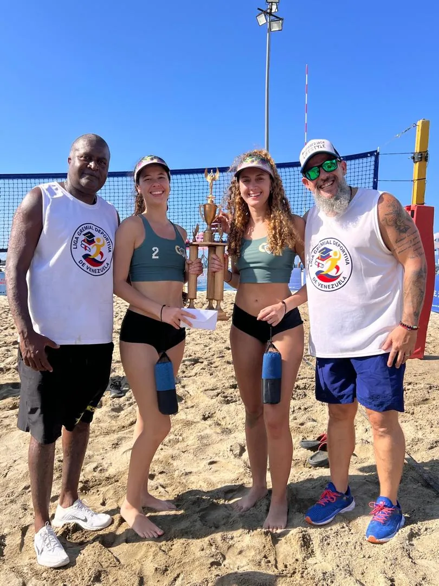
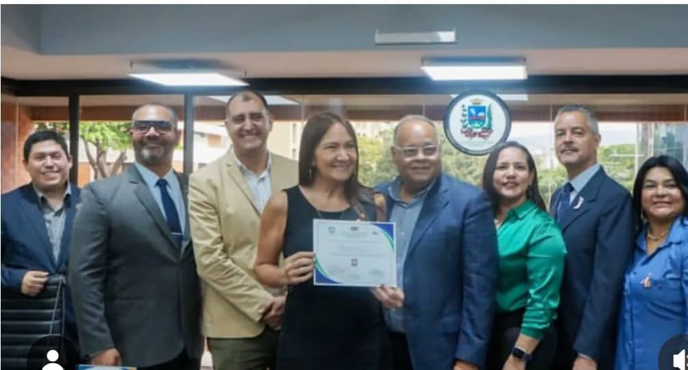

01
Bienestar integral
Preparación, prevención y recuperación para que la práctica deportiva acompañe la salud física, emocional y mental.
La LGD integra bienestar, responsabilidad social, participación igualitaria y cuidado ambiental en la organización de sus actividades deportivas, recreativas y gremiales.

La LGD conecta bienestar, inclusión, formación, cuidado del entorno y cooperación institucional.

Preparación, prevención y recuperación para que la práctica deportiva acompañe la salud física, emocional y mental.

Charlas, orientación y herramientas prácticas para fortalecer hábitos saludables y una participación segura.

Participación igualitaria, categorías abiertas y reconocimiento del liderazgo de las mujeres en la comunidad deportiva.

Uso consciente de materiales, reducción progresiva de residuos y organización de eventos con criterios de consumo responsable.
Protección y uso responsable de sedes deportivas y áreas al aire libre donde se reúnen las comunidades gremiales.

Cooperación con instituciones públicas, colegios profesionales, empresas y organizaciones para ampliar el alcance de la Liga.
La organización promueve hábitos de consumo responsable, reciclaje y reducción progresiva de residuos durante las actividades.
La práctica deportiva se presenta como herramienta de salud física, emocional y mental para profesionales participantes.
La Junta Directiva y los comités organizadores evaluarán las jornadas para medir avances ecológicos y de bienestar.
La hoja de ruta de la Liga combina charlas, jornadas ecológicas, competencias gremiales y actividades de integración.